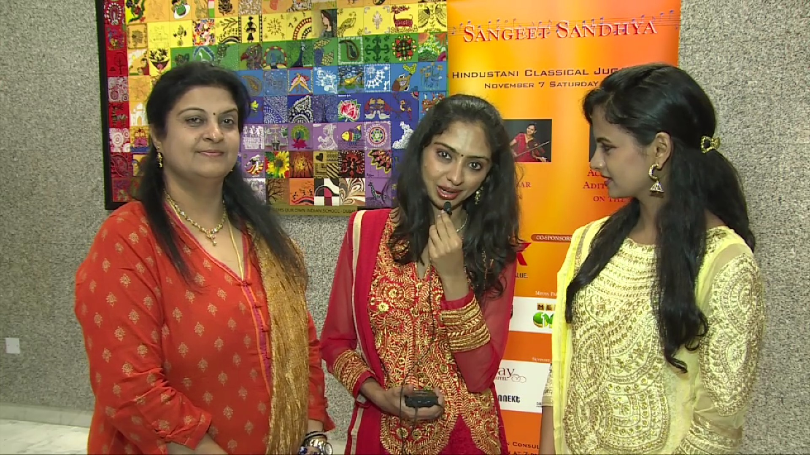

Jugalbandi

November 7 Saturday 2015
On November 7 Saturday evening Global Konnekt presents two enormously talented performing artists
from Mumbai Ragini and Nandini Shankar in a classical Hindustani violin Jugalbandi Sangeet
Sandhya at the Indian Consulate Auditorium.
...
They have embraced the distinct styles of Hindustani
genre of classical violin so beautiful that their versatility is a testimony of the stamp of perfection in
their pursuit of music, The Jugalbandi concert symbolizes the new generation of Performers who have
blended tradition with modern feel of music to make it a class apart for everyone to learn, experience
and enjoy.
Nandini Shankar, one of the exceedingly talented daughters of Mr. Shankar Devraj and the violin
maestro Dr. Sangeeta Shankar, began her training in music from the tender age of 3 under the tutelage
of her mother and illustrious grandmother, Padmabhushan Dr. N. Rajam, the ace violinist of the
country. Having been born and brought up in an atmosphere surcharged with high caliber music round
the clock, Her progress has been enormously astonishing and she has reached a high level of
proficiency on the violin. Nandini gave her first public performance as a young 8 year old in Bhopal.
She gave her first full-fledged solo concert when she was just 13, in Dharwad.
Thereafter she has performed in many prominent music festivals like the Europalia (In Belgium &
Canada), SawaiGandharva (Pune), Saptak (Ahemdabad), ITC Sangeet Sammelan (Delhi), Jaya Smriti
(Hema Malinis yearly tribute),Delhi Internation Arts Festival, Bhilwara Sur Sangam, Ganga Mahotsav
(Varanasi), Aarohi organized by Pancham Nishad Creatives Pvt. Ltd., MERU, IMG in Mumbai,
Banaras Hindu University, Bhartiya Vidya Bhavan (Mumbai),Music Academy (Chennai), Kala
Academy (Goa), Shruti Mandal (Jaipur), Maihar, Durgyana Mandir (Amritsar), and also been telecast
in Idea Jalsa.
Apart from having appeared on many platforms all over the country, she has also performed abroad
extensively in countries like USA, Canada, Germany, France, Netherlands, Hungary, Belgium,
Singapore and Malaysia. Nandini has-been highly applauded by music enthusiasts for being one of the
most promising faces of Indian Classical music.
She has always excelled in her academics and is currently pursuing Chartered Accountancy.
Ragini Shankar as her name suggests, originates from the word Raga. Ragini means melody, an
embodiment of music.
Born in a family with a musical lineage spanning over seven generations, Ragini began
her training in Hindustani (North Indian) Classical Music on the Violin at the tender age
of 4 under the tutelage of her exemplary mother Dr. Sangeeta Shankar and illustrious
grandmother, Padmabhushan Dr. N Rajam, ace violinists of the country. Being highly
gifted in her musical talents, Ragini has grown to show brilliance in her performances
.Her asset being her ability to reproduce vocal music on the violin (Gayaki Ang, a
revolutionary technique invented by her grandmother, Dr. N Rajam) with astounding
accuracy, tonal quality, exceptional fingering and break-neck bowing techniques.
As a young 11 year old, Ragini gave her first public performance in Bharat Bhavan
Cultural Center, a multi-faceted center for the performing arts, in Bhopal. Thereafter she
has performed in many prestigious music festivals all across India like the ‘Sawai
Gandharva’ Music Festival in Pune, “Doverlane Music Festival’ in Kolkata, ‘Gunidas
Sangeet Sammelan’ in Mumbai, ‘Saptak’ in Ahmedabad, Bhartiya Vidya Bhavan in
Mumbai, Maihar, Banaras Hindu University, Music Academy in Chennai, Kala Academy in
Goa with her mother and grandmother. She has also performed in various cities like
Delhi, Gwalior, Bangalore, Bhopal, Baroda, Amravati, Dehradun, Surat, Hyderabad
Mangalore, Coimbatore, Kanpur, Thane, Nagpur, etc.
Apart from having appeared on many platforms all over the country, she has also performed abroad
extensively in countries like USA, Canada, Germany, France, Belgium, Singapore & Malaysia. Ragini
also gives lecture demonstrations and conducts workshops on a regular basis whilst globe-trotting. She
is a recipient of the Cultural Scholarship from the Ministry of Culture, Government of India. She is a
faculty at Whistling Woods International School of Music since its inception. Ragini has been highly
applauded by music enthusiasts for being one of the most promising faces of Indian Classical music.
She has also excelled in her academics being a top ranker in Mechanical Engineering.
Padmabhushan Dr. N. Rajam is the pioneer of the revolutionary Gayaki Ang, which highly
influenced the whole country to follow suit, so much so that she is now known as the Singing
Violin. Coming from a family of traditional musicians, she mastered the Carnatic style at a
very young age, and later ventured into the Hindustani style, and made a path-breaking entry
through her Gayaki Ang. Apart from being a great performer, Dr. Rajam has also served as a
Professor and Dean in Banaras Hindu University for 40 years and has been the recipient of
countless awards including one of the highest civilian honours in India the Padmashri & the
Padmabhushan.
The Dubai Violin jugalbandi concert of Nandini and Ragini Shankar is surely going to be a treat for the
Connoisseurs of music where they can expect an interactive performance of music.
The young sisters will be accompanied by the very talented Tabla artist Aditya Kalyanpur a student
Of Allah Rakha and Zakir Hussein and has performed all over the globe with many leading artists.
Jyoti Easwaran of Global Konnekt has presented many well known artists and the current bunch of
highly talented artists from the younger generation is a testimony to the increased popularity of the
Classical art forms in music and dance with some amazing talents on reality shows.
‘I watched them one day on IDEA JALSA on Indian Television hosted by Durga Jasraj and Annu
Kapoor and was amazed at their dexterity, perfection and gay abandon while playing the violin and
decided to stage these young artists along with the prodigious Aditya Kalyanpur on the tabla.The show
will be a real delight to watch the young artists on centre stage
About the organizer
Global Konnekt an events and business consultancy headed by Jyoti Easwaran a trained Classical
singer and health care professional is passionate about promoting classical art forms that depict a rich
legacy of culture and tradition.Having had the opportunity to stage many a stalwart both from the
Hindustani and Carnatic genres of music ,with the rising popularity of classical forms of arts among
the youth and mushrooming of many schools imparting training in the same Global Konnekt seeks to
present newer generation of outstanding artists whose love and dedication for performing arts is a sheer
delight to witness with the blend of technology and finesse in the presentation.